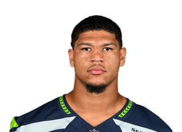

BALL KEEP
40 boards · Superflex · PPR · Sleeper
Player File · TE SEA

Elijah Arroyo
TE · SEA · 23 · Miami (FL)
2026 · through Week 5
Counting stats
Yards17
Touches1
Catches1
Targets2
TDs0
Snap %22.3%
Rush yds0
Rec yds17
Catch %50.0%
Yds/touch17.0
PPR2.7
Games6
Yearly
| Year | G | Snap % | Touches | Tgt | Rec | Yds | TD | Rush | RuYd | ReYd | PPR |
|---|---|---|---|---|---|---|---|---|---|---|---|
| 2026 | 6 | 22.3% | 1 | 2 | 1 | 17 | 0 | 0 | 0 | 17 | 2.7 |
| 2025 | 13 | 39.5% | 15 | 26 | 15 | 179 | 1 | 0 | 0 | 179 | 36.9 |
Game by game · 2026
| Wk | Opp | Snap % | Touches | Tgt | Rec | Yds | TD | Rush | RuYd | ReYd | PPR |
|---|---|---|---|---|---|---|---|---|---|---|---|
| 1 | vs NE | 22.0% | 0 | 0 | 0 | 0 | 0 | 0 | 0 | 0 | 0.0 |
| 2 | @ ARI | 21.4% | 1 | 1 | 1 | 17 | 0 | 0 | 0 | 17 | 2.7 |
| 3 | @ WAS | 26.9% | 0 | 0 | 0 | 0 | 0 | 0 | 0 | 0 | 0.0 |
| 4 | vs LAC | 31.7% | 0 | 0 | 0 | 0 | 0 | 0 | 0 | 0 | 0.0 |
| 5 | vs SF | 31.7% | 0 | 1 | 0 | 0 | 0 | 0 | 0 | 0 | 0.0 |
| Total | 26.8% | 1 | 2 | 1 | 17 | 0 | 0 | 0 | 17 | 2.7 |
Regular-season line from Sleeper. Touches are carries plus catches. Yards are rushing plus receiving. Snap % is offensive snaps divided by team offensive snaps.
Keep avg239.42
# Boards10
BK Value718
Spread205-254
The Keep#248BK 718The Board#285BK 515The Classic#286BK 510Best Ball#276BK 558SF Redraft#294BK 475STD#288BK 501
Board graph
Spread 205-254 · 10 sources
Every Board
Spread 205-254 · 10 sources
| Source | Rank |
|---|---|
| Mike Clay (ESPN) | 205 |
| PFN (Katz/Soppe) | 214 |
| KeepTradeCut SF | 241 |
| FantasyPros ECR | 245 |
| Dynasty Trade Calculator | 245 |
| DLF Superflex | 248 |
| Sleeper Superflex | 248 |
| DLF ADP mix | 248 |
| Superflex market mash | 248 |
| Dynasty Nerds | 254 |
All player pages · The Keep · The Board · Recent deals · Hot 'n' Cold · BK News · Trade calculator